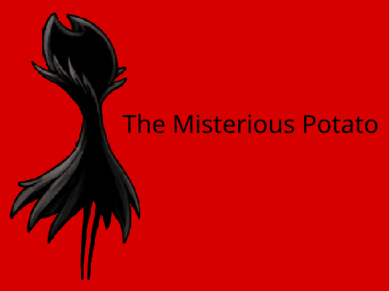
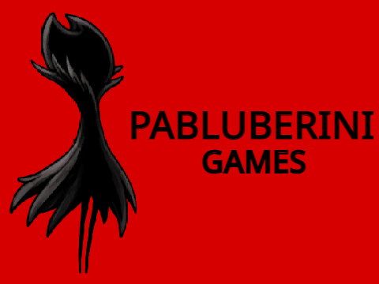

JOC DE SCRATCH
The Misterious Potato
Descobreix The Misterious Potato, el meu projecte de Scratch.
Juga ara ↗Benvingut a PaBluberini Games, un estudi independent on neixen idees, projectes creatius i videojocs fets amb Scratch.
Descobreix els jocs ↓
Descobreix i juga als meus projectes de Scratch.

Descobreix The Misterious Potato, el meu projecte de Scratch.
Juga ara ↗PaBluberini Games és el meu estudi de creació de videojocs. Aquí treballo en idees originals i projectes de Scratch, experimentant amb mecàniques, disseny i noves maneres de jugar.